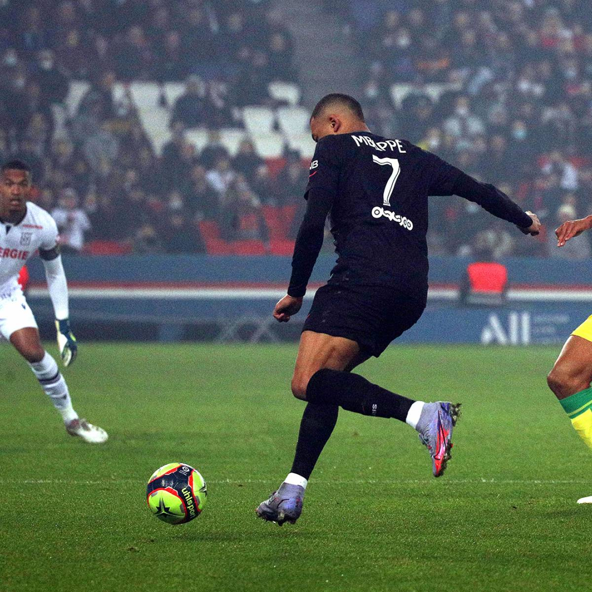

ACTIVITÉS PERSONNELLES
Sur cette page, je vais vous présenter les différentes activitées personnelles que je fais au quotidient. Je vais présenter les différents sports avec différentes images

Je fais du football depuis mes 6 ans et aujourd'hui je joue à dinan léhon
Je fais également de la course à pied
Je vais souvent au cinéma